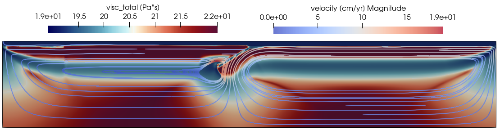

2D Thermomechanical subduction model
In this example, we will show how to create a 2D thermomechanical model of subduction. Here the setup is saved into a julia script. First create TM_Subduction_example.jl
1. load necessary packages
using LaMEM, GeophysicalModelGenerator, Plots2. LaMEM model setup
The setup will include 6 differents materials with the following id's:
# matierial id's
# 0: asthenosphere
# 1: oceanic Crust
# 2: oceanic lithosphere
# 3: continental crust
# 4: continental lithosphere
# 5: air layermodel = Model(Grid( x = [-2000.,2000.],
y = [-8.,8.], # <- model is 2D, size in y-direction is choosen to be close to a cube shape for the cell
z = [-660,40] ,
nel = (512,1,128) ),
BoundaryConditions(temp_bot=1565, open_top_bound=1),
Scaling(GEO_units(temperature=1000, stress=1e9Pa, length=1km, viscosity=1e20Pa*s)),
Time(nstep_max=20) ) Set timestepping parameters
Here the max time (time_end) is set to a large value as we limit the simulation using nstep_max = 400
model.Time = Time( time_end = 2000.0,
dt = 0.01,
dt_min = 0.000001,
dt_max = 0.1,
nstep_max = 400,
nstep_out = 25
)Set solution parameters
We activate shear heating and adiabatic heating and set the minimum and maximum viscosties of the model:
model.SolutionParams = SolutionParams( shear_heat_eff = 1.0,
Adiabatic_Heat = 1.0,
eta_min = 5e18,
eta_ref = 1e21,
eta_max = 1e25,
min_cohes = 1e3
)Set surface topography
We activate the surface topographix:
model.FreeSurface = FreeSurface( surf_use = 1, # free surface activation flag
surf_corr_phase = 1, # air phase ratio correction flag (due to surface position)
surf_level = 0.0, # initial level
surf_air_phase = 5, # phase ID of sticky air layer
surf_max_angle = 40.0 # maximum angle with horizon (smoothed if larger))
)Set model output
We update the list of fields saved as output:
model.Output = Output( out_density = 1,
out_j2_strain_rate = 1,
out_surf = 1,
out_surf_pvd = 1,
out_surf_topography = 1,
out_temperature = 1, )Then we set adiabatic temperature throughout the model (0.4°C/km) and mantle potential temperature at the surface 1280°C:
Tair = 20.0;
Tmantle = 1280.0;
Adiabat = 0.4Set some background properties, later overwritten
model.Grid.Temp .= Tmantle .+ 1.0; # set mantle temperature (without adiabat at first)
model.Grid.Phases .= 0; # Set Phases to 0 everywhere (0 is/will be asthenosphere in this setup):Setup temperature of the air to be 20°C
model.Grid.Temp[model.Grid.Grid.Z .> 0] .= Tair;
model.GridSetup the air layer (id = 5) if Z > 0.0
model.Grid.Phases[model.Grid.Grid.Z .> 0.0 ] .= 5;Add left oceanic plate
Here we use the AddBox!() function (see ?GeophysicalModelGenerator.AppBox! for more information). The lithosphere to asthenosphere temperature is set to 1250°C. If temperature of the plate is > 1250°C then the material is turned to asthenosphere. The temperature profile of the plate is set using half space cooling and a spreading rate velocity of 0.5 cm/yr with the ridge prescribed to the "left" of the box.
AddBox!(model; xlim = (-2000.0, 0.0),
ylim = (model.Grid.coord_y[1], model.Grid.coord_y[2]),
zlim = (-660.0, 0.0),
Origin = nothing, StrikeAngle=0, DipAngle=0,
phase = LithosphericPhases(Layers=[20 80], Phases=[1 2 0] ),
T = SpreadingRateTemp( Tsurface = Tair,
Tmantle = Tmantle,
MORside = "left",
SpreadingVel= 0.5,
AgeRidge = 0.01;
maxAge = 80.0 ) )add right oceanic plate
AddBox!(model; xlim = (1500, 2000),
ylim = (model.Grid.coord_y[1], model.Grid.coord_y[2]),
zlim = (-660.0, 0.0),
Origin = nothing, StrikeAngle=0, DipAngle=0,
phase = LithosphericPhases(Layers=[20 80], Phases=[1 2 0] ),
T = SpreadingRateTemp( Tsurface = Tair,
Tmantle = Tmantle,
MORside = "right",
SpreadingVel= 0.5,
AgeRidge = 0.01;
maxAge = 80.0 ) )Add overriding plate margin
For the overriding plate margin the age is fixed to 90 Ma using HalfspaceCoolingTemp().
AddBox!(model; xlim = (0.0, 400.0),
ylim = (model.Grid.coord_y[1], model.Grid.coord_y[2]),
zlim = (-660.0, 0.0),
Origin = nothing, StrikeAngle=0, DipAngle=0,
phase = LithosphericPhases(Layers=[25 90], Phases=[3 4 0] ),
T = HalfspaceCoolingTemp( Tsurface = Tair,
Tmantle = Tmantle,
Age = 80 ) )
```
##### Add overriding plate cratonAddBox!(model; xlim = (400.0, 1500.0), ylim = (model.Grid.coordy[1], model.Grid.coordy[2]), zlim = (-660.0, 0.0), Origin = nothing, StrikeAngle=0, DipAngle=0, phase = LithosphericPhases(Layers=[35 100], Phases=[3 4 0] ), T = HalfspaceCoolingTemp( Tsurface = Tair, Tmantle = Tmantle, Age = 120 ) )
##### add pre-subducted slab
Here we change the dip angle of the box to 30°C to initiates subduction:AddBox!(model; xlim = (0.0, 300), ylim = (model.Grid.coordy[1], model.Grid.coordy[2]), zlim = (-660.0, 0.0), Origin = nothing, StrikeAngle=0, DipAngle=30, phase = LithosphericPhases(Layers=[30 80], Phases=[1 2 0], Tlab=1250 ), T = HalfspaceCoolingTemp( Tsurface = Tair, Tmantle = Tmantle, Age = 80 ) )
##### Impose approximate adiabatmodel.Grid.Temp = model.Grid.Temp -Z.*Adiabat;
##### Plot preview of the setup
Cross-sections of the model setup showing the temperature and the phase fields can be visualize as follow:plotcrosssection(model, y=0, field=:temperature) plotcrosssection(model, y=0, field=:phase)


#### 3. Define material parameters
##### Softening law
Post-softening strength is defined as 0.05 the initial strengthsoftening = Softening( ID = 0, # softening law ID APS1 = 0.1, # begin of softening APS APS2 = 0.5, # end of softening APS A = 0.95, # reduction ratio )
##### Material thermal and rheological properties
For the mantle we use dry olivine rheology:dryPeridotite = Phase( Name = "dryPeridotite", ID = 0, # phase id [-] rho = 3300.0, # density [kg/m3] alpha = 3e-5, # coeff. of thermal expansion [1/K] dislprof = "DryOlivinedislcreep-HirthKohlstedt2003", Vn = 14.5e-6, diffprof = "DryOlivinediffcreep-HirthKohlstedt2003", Vd = 14.5e-6, G = 5e10, # elastic shear module [MPa] k = 3, # conductivity Cp = 1000.0, # heat capacity ch = 30e6, # cohesion [MPa] fr = 20.0, # friction angle A = 6.6667e-12, # radiogenic heat production [W/kg] chSoftID = 0, # cohesion softening law ID frSoftID = 0, # friction softening law ID )
Oceanic crust:
For the oceanic crust we use a low cohesion and a frictional angle equal to 0. The goal is to make to oceanic crust weak enough to lubricate the interface with the overriding plate and allow for self-sustain subduction. Moreover, as density is not pressure and temperature dependent, it is set as the mantle to 3300 in order to be neutrally buoyant with respect to the rest of the lithosphere.oceanicCrust = Phase( Name = "oceanCrust", ID = 1, # phase id [-] rho = 3300.0, # density [kg/m3] alpha = 3e-5, # coeff. of thermal expansion [1/K] dislprof = "PlagioclaseAn75-Ranalli_1995", G = 5e10, # elastic shear module [MPa] k = 3, # conductivity Cp = 1000.0, # heat capacity ch = 5e6, # cohesion [MPa] fr = 0.0, # friction angle A = 2.333e-10, # radiogenic heat production [W/kg] )
Oceanic lithosphere:oceanicLithosphere = copy_phase( dryPeridotite, Name = "oceanicLithosphere", ID = 2 )
Contiental crust:continentalCrust = copyphase( oceanicCrust, Name = "continentalCrust", ID = 3, dislprof = "Quarzite-Ranalli_1995", rho = 2700.0, ch = 30e6, fr = 20.0, A = 5.3571e-10, chSoftID = 0, frSoftID = 0, )
Continental lithosphere:continentalLithosphere = copy_phase( dryPeridotite, Name = "continentalLithosphere", ID = 4 )
air = Phase( Name = "air", ID = 5, # phase id [-] rho = 50.0, # density [kg/m3] # coeff. of thermal expansion [1/K] eta = 1e19, G = 5e10, # elastic shear module [MPa] k = 100, # conductivity Cp = 1e6, # heat capacity ch = 10e6, # cohesion [MPa] fr = 0.0, # friction angle )
##### Add phases to the modelrmphase!(model) addphase!( model, dryPeridotite, oceanicCrust, oceanicLithosphere, continentalCrust, continentalLithosphere, air )
##### Add softening lawadd_softening!( model, softening )
##### Set solver options
The PETSc command ```-da_refine_y 1``` allow to run the model as 2Dmodel.Solver = Solver( SolverType = "direct", DirectSolver = "superludist", DirectPenalty = 1e5, PETScoptions = [ "-sneskspew", "-darefiney 1" ] )
#### 4. Perform simulation
Here we indicate 4 cores, use 8 if possible!run_lamem(model, 4) ```
